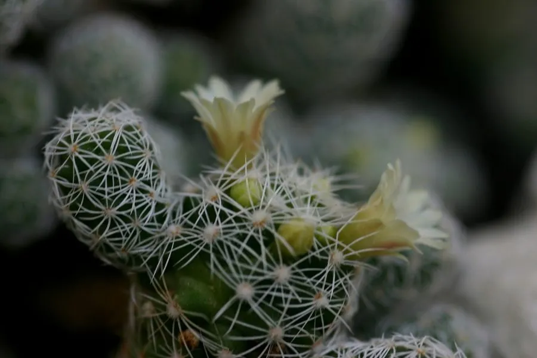

多肉植物 · 植物界
银手指 Mammillaria gracilis

仙人掌科乳突球属多年生肉质植物，小型柱状球体密被白色软刺，易丛生、易掉小球，是适合小盆栽培的可爱品种。
- 分类
- 门被子植物门纲木兰纲目石竹目科仙人掌科属乳突球属
- 栖息环境
- 原产墨西哥中部干旱山地，喜光耐旱、通风良好
- 地理分布
- 原产墨西哥中部；中国各地作为观赏仙人球栽培
- 保护级别
- 暂无评估；栽培观赏植物，不涉及保护等级
物种志
银手指为仙人掌科乳突球属多年生肉质植物，小型，单球圆柱形，高约五至八厘米，直径二至三厘米，易丛生。疣突小而密，周刺白色、细软，覆盖球体，使植株呈银白色；中刺常缺失。花小，漏斗状，白色至淡黄色，花期春季；浆果棒状，成熟时红色，种子褐色。
银手指原产墨西哥中部，中国各地作为观赏仙人球栽培。它喜光、耐旱，夏季高温时需适度遮阴；适宜疏松透气、排水良好的颗粒基质，忌积水和闷热。球体小巧、白刺柔软，丛生后像一簇银白色的小手指，是窗台和小盆栽培的可爱品种；搬动时容易碰掉小球，掉下的小球放在土面即可生根。繁殖以分株和扦插为主。
形态与习性
- 株型小型圆柱状，易丛生
- 球径直径 2–3 cm，高 5–8 cm
- 花期春季，花小、白色
- 光照喜光，夏季适度遮阴
- 水分耐旱，干透浇透
- 土壤疏松排水良好的颗粒土
- 主要用途小盆栽培、组合盆景
趣味知识
- 银手指的小球很容易脱落，掉下的小球放在土面就能生根长成新株。
- 它丛生后像一簇银白色的小手指，因此得名银手指。
- 银手指株型小巧，拇指大的花盆就能栽种，适合窗台摆放。